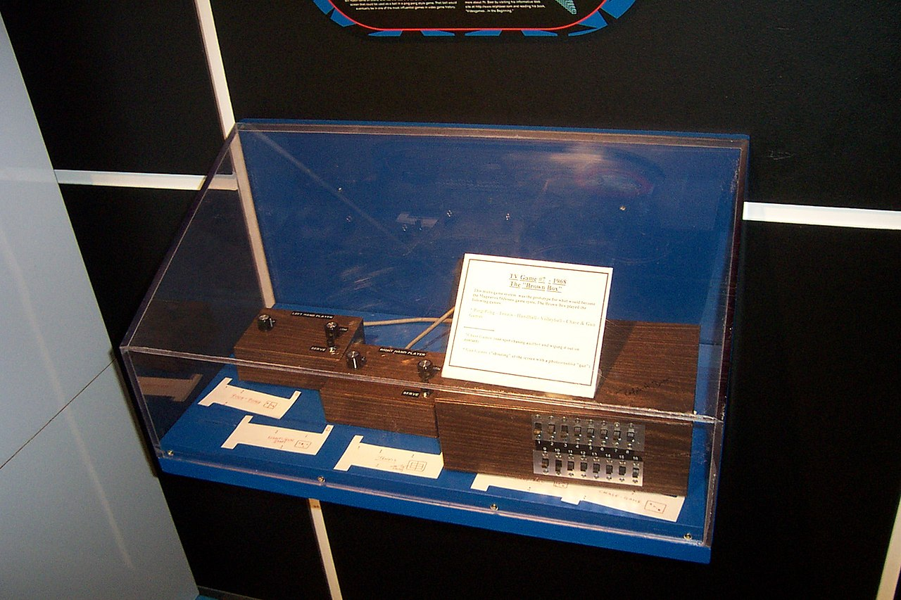

Перейти на первую страницу сайта
Перейти на вторую страницу сайта
Перейти на четвёртую страницу сайта
В 1966 году американский инженер Ральф Бер, работавший в компании Sanders Associates — подрядчике Министерства обороны США — по собственной инициативе начал работу над проектом телевизионного устройства для игр, которое он называл Channel LP (с англ. — «let's play», «давай поиграем»). Хотя первые попытки Sanders Associates найти партнера среди крупных производителей телевизоров, остались неудачными, в 1971 году Бер и его сотрудники сумели заключить контракт с компаний Magnavox; прототип устройства, в то время известный как Brown Box, был превращён в коммерческий продукт — первую домашнюю игровую приставку Magnavox Odyssey.
